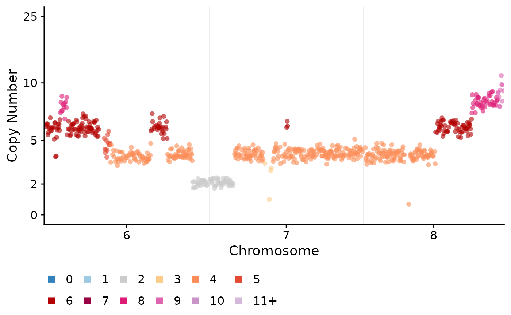
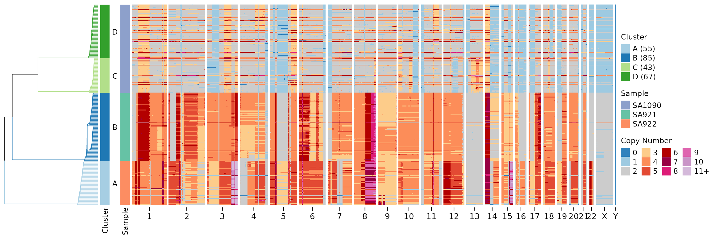
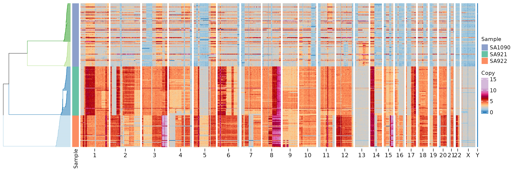

basic_scdnaseq.Rmd
library(signals)Although this package was put together to infer allele or haplotype specific copy number in scDNAseq data, it has a lot of methods for visualization and analysis that should be useful for any type of scDNAseq data, including when you only have total copy number calls. Here we’ll go through the available plotting functions and various utilities to summarize the data.
The main requirement is a dataframe with the following columns:
chr, start, end,
cell_id, state, copy. state is
the inferred total copy number state. copy values are GC-correceted,
ploidy corrected normalized read counts that would be used to infer the
states. This may difer depending on the tool you use. We provide some
example data (CNbins) with this package. Most functions
will work with either this kind of dataframe or a signals
object, here we’ll just use the CNbins dataframe.
The first thing we can do is plot single cell copy number profiles.
plotCNprofile(CNbins, cellid = "SA921-A90554A-R03-C44")These can tweaked in various ways, including modifying the y-axis, only plotting certain chromosomes or changing the point size etc:
plotCNprofile(CNbins, cellid = "SA921-A90554A-R03-C44", y_axis_trans = "squashy", maxCN = 25, chrfilt = c("6", "7", "8"), pointsize = 2)
We can also plot all the cells using the plotHeatmap
function. This can optionally take in a phylogenetic/clustering tree in
newick format. If you don’t have this you can use the
umap_clustering function to cluster your data using umap
and hdbscan.
clustering <- umap_clustering(CNbins, field = "copy")Then we can use this output in the plotHeatmap function.
If you leave the tree and clustering options
empty then plotHeatmap will fall back to use
umap_clustering.
plotHeatmap(CNbins, tree = clustering$tree, clusters = clustering$clustering)
The default is to plot the state column, we can change
this to plot the copy raw data column.
plotHeatmap(CNbins, tree = clustering$tree, clusters = clustering$clustering, show_clone_label = F, plotcol = "copy")
Compute consensus copy number profiles.
CNbins_consensus <- consensuscopynumber(CNbins, cl = clustering$clustering) #cell_id becomes clone_id
plotCNprofile(CNbins_consensus)Create segmentation from binned data.
segments <- create_segments(CNbins)Compute average copy number per chromosome or chromosome arm.
CNbins_chr <- per_chr_cn(CNbins)
CNbins_arm <- per_chrarm_cn(CNbins)